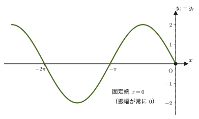
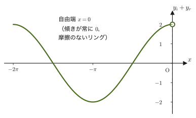
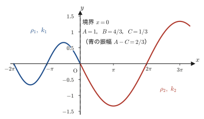
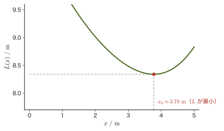

第14章光の反射と屈折 — 位相の変化・フェルマーの原理・全反射
水面に映る景色，コップの水に差し込んだストローが折れ曲がって見える現象，ダイヤモンドがきらきらと輝く理由——これらはすべて，光が異なる媒質の境界で「反射」したり「屈折」したりすることで起こる．高校物理では，反射の法則（入射角＝反射角）と屈折の法則（$n_1\sin\theta_1=n_2\sin\theta_2$）を公式として学び，全反射は「屈折角が $90^\circ$ を超えようとすると起こる」現象として習ったはずである．この章では，反射のときの光の位相の変化と，光の進む向きを決める二つの法則とが，それぞれ何から来るのかを見ていく．位相の変化の理由は，弦を伝わる波の反射・透過という，より基礎的な現象の境界条件の中にある．一方，反射の法則・屈折の法則は，ホイヘンスの原理とフェルマーの原理から導かれる．
第13章では，光の速さの測定と絶対屈折率 $n=c_0/v$（$c_0$：真空中の光速，$v$：媒質中の光速）を学んだ．本章はそこから話を引き継ぎ，まず「反射するとき，波の位相（山と谷のタイミング）がどう変わるか」という問いから始める．音波や水面波，そして第11章で学んだ弦の振動と同じように，光も境界で反射するとき，境界の性質に応じて位相が $\pi$（半波長分）ずれる場合とずれない場合があるのである．これを理解する近道は，音や弦の反射と同じ「境界条件」の言葉で考えることである——線密度の異なる弦をつないだときに何が起こるかを，波の式を使って正面から解いてみると，光が反射するときに位相が $\pi$ ずれる条件（絶対屈折率の大小）が姿を現す．一方，光の進む向き（反射の法則・屈折の法則）は，14.4節のホイヘンスの原理と14.5節のフェルマーの原理から導く．
後半では，光の進み方を統一的に説明する「フェルマーの原理」（光は光学的距離が停留値をとる経路を進む）を学び，これを微分（大学数学 第1章）を使って実際に計算することで，屈折の法則 $n_1\sin\theta_1=n_2\sin\theta_2$ を導く．高校では別々の公式として覚えた反射の法則と屈折の法則が，実は「経路の長さ（正確には光学的距離）を最小にする」というただ一つの原理の帰結であったことが分かるはずである．最後に，光が電磁波の一種であること，波長によって屈折率がわずかに異なるために虹やプリズムの分散が起こること，そして全反射と光ファイバーの原理までを扱う．
- 弦の反射を境界条件（固定端・自由端）から導き，反射のとき位相が $\pi$ 変化する場合と変化しない場合があることを式で確認する
- 線密度の異なる弦をつないだときの反射波・透過波の振幅を，連続条件と滑らかな条件から場合分けして求める
- 弦の反射条件（線密度の大小）が，光の反射条件（絶対屈折率の大小）にそのまま対応することを理解する
- 反射の法則・屈折の法則（スネルの法則）を導き，フェルマーの原理から屈折の法則を微分によって導出する
- 光が電磁波の一種であること，光の分散（波長による屈折率の違い），全反射と臨界角，光ファイバーの原理を説明できる
もとにしたノート：望月泰英『物理学ノート 波動』 pp. 22–28．
14.1 固定端反射と自由端反射 — 境界条件からの導出
14.1.1 反射で位相が変わるしくみ
結論から先に言うと，光が絶対屈折率の小さいところから大きいところへ進んで反射するとき，反射光の位相は入射光に対して $\pi$（半波長分）だけずれる．逆に，絶対屈折率の大きいところから小さいところへ進んで反射するときは，位相はずれない．これを，弦を伝わる波にたとえて，境界の性質によって2種類に分けて考える（図14.1）．なお，この章で位相の話をするときは，光が境界面にほぼ垂直に入射する場合を考えている（斜めに入射する場合は，偏光の向きによって位相の変わり方が異なる．また，全反射のときの位相は $0$ でも $\pi$ でもない値になる）．さらに，位相がずれるのは光の電場の振動についてであり，電場と磁場の関係は第42章で学ぶ．
なぜこうなるのか，そしてなぜ固定端反射では位相が $\pi$ 変化し，自由端反射では変化しないのかを，1次元の波の式を使って正面から確かめよう．
14.1.2 1次元の波の式による考察の準備
$x\leqq0$ の領域に張られた弦を考え，$x=0$ で波が完全に反射するとする．波が反射しても振動数（したがって角振動数 $\omega$）と波長（したがって波数 $k=2\pi/\lambda$）は変化しないことを前提に，入射波 $y_i$ と反射波 $y_r$ を次のように仮定する（第11章 11.3節で学んだとおり，第II部では正弦波を $y=A\sin(\omega t-kx+\phi)$ の形で表す規約なので，反射波の位相のずれを表す定数を $\phi$ とおく）．
$$ \begin{cases} y_i = A\sin(\omega t - k x) \\ y_r = A\sin(\omega t + k x + \phi) \end{cases} \qquad (0\leqq \phi \lt 2\pi) $$入射波 $y_i$ は $+x$ 方向に，反射波 $y_r$ は $-x$ 方向に進む波である（符号が $+kx$ になっている波は $-x$ 方向へ進む——第11章 11.4節で確認したとおり，$\omega t-kx=$ 一定 を満たす点が時間とともに $x$ の増える向きに動くのに対し，$\omega t+kx=$ 一定 を満たす点は $x$ の減る向きに動く）．反射波の角振動数 $\omega$ と波数 $k$ を入射波と同じにしたのは，反射波も同じ弦（同じ波の速さ $v$）の上を進むので，$\omega=vk$ の関係から，$\omega$ が同じなら $k$ も同じになるからである．また振幅も同じ $A$ とおいたのは，完全に反射する（エネルギーが失われない）からである（反射波の振幅を $A'$ とおいても，14.1.3・14.1.4 の境界条件から $A'=A$ が出る）．未知数は反射波の位相のずれ $\phi$ だけであり，これから境界条件を使って $\phi$ を決める．
注意：ロープのモデルで考える
これから考える「固定端」「自由端」は，次のようなロープのモデルで考えるとよい．固定端は，$x=0$ の点をロープと壁にくっつけて固定した場合である．自由端は，$x=0$ の位置に立てた，なめらかな（摩擦のない）鉛直な棒にリング（輪）を通し，ロープの端をそのリングに結びつけて，リングだけが棒に沿って上下に自由に動ける場合である．リングの質量は無視できるほど軽いとする（質量があると，リングの慣性が反射のしかたを変えてしまう）．いずれも，$x=0$ で波がエネルギーを失うことなく完全に反射する状況のモデルになっている．
14.1.3 固定端反射の導出
境界が固定端の場合，境界上の媒質（弦）はまったく動かない．したがって，境界条件は
$$ \boxed{(y_i+y_r)\big|_{x=0} = 0} $$である．これに $x=0$ を代入すると，
$$ A\sin\omega t + A\sin(\omega t+\phi) = 0 $$導出：固定端反射の位相のずれ
三角関数の和積の公式 $\sin\alpha+\sin\beta=2\sin\dfrac{\alpha+\beta}{2}\cos\dfrac{\alpha-\beta}{2}$（$\alpha=\omega t,\ \beta=\omega t+\phi$ とおく）を左辺に使うと，
$$ A\sin\omega t + A\sin(\omega t+\phi) = 2A\sin\left(\omega t+\frac{\phi}{2}\right)\cos\frac{\phi}{2} $$となる（右辺を展開して左辺に戻ることは加法定理で確かめられる）．よって境界条件は
$$ 2A\sin\left(\omega t+\frac{\phi}{2}\right)\cos\frac{\phi}{2} = 0 $$であり，$A\neq0$ なのでこの式全体から $A$ は消せて，
$$ \sin\left(\omega t+\frac{\phi}{2}\right)\cos\frac{\phi}{2} = 0 $$となる．ここで大事なのは，この式がすべての時刻 $t$ で成り立たなければならないという点である．もし $\cos(\phi/2)\neq0$ だとすると，$\sin(\omega t+\phi/2)=0$ が任意の $t$ で成り立つことになるが，$\sin$ は時刻とともに値が変化する関数なので，これは $t$ をほんの少しずらしただけで破れてしまう（実際，$\sin(\omega t+\phi/2)=0$ をみたす $t$ は，$\omega t+\phi/2=n\pi$（$n$ は整数）を満たす飛び飛びの時刻に限られる）．したがって，任意の $t$ で成り立つためには
$$ \cos\frac{\phi}{2} = 0 $$でなければならない．これを解くと $\dfrac{\phi}{2}=\left(n+\dfrac12\right)\pi$（$n$ は整数），すなわち $\phi=(2n+1)\pi$ となる．$0\leqq\phi\lt2\pi$ の範囲でこれを満たすのは $n=0$ のときだけなので，
\begin{equation} \phi = \pi \label{eq:14-fixed-phase} \end{equation}（導出終わり）
公式14.1 固定端反射の位相のずれ
境界が固定端（境界上の変位が常に $0$）のとき，反射波は入射波に対して位相が $\pi$（半波長分）だけずれる：$\phi=\pi$．すなわち反射波は
$$ y_r = A\sin(\omega t+kx+\pi) = -A\sin(\omega t+kx) $$と，符号を反転させた形になる．

14.1.4 自由端反射の導出
境界が自由端の場合，境界上の媒質は自由に動ける．なめらかな棒はリングに水平方向（$x$ 方向）の力しか及ぼさず，リングの質量は無視できるので，リングにはたらく上下方向の力——弦の張力 $S$ の上下方向の成分 $S\,\partial y/\partial x$——は $0$ でなければならない．すなわち，境界での波形は常に $x$ 軸と平行（傾き $0$）である．したがって，境界条件は
$$ \boxed{\dfrac{\partial}{\partial x}(y_i+y_r)\Big|_{x=0} = 0} $$である（$\partial/\partial x$ は「ラウンド・ディー・バイ・ディー・エックス」と読み，$t$ を固定して $x$ だけで微分する偏微分——大学数学 第6章 6.2節——だが，ここでは $y_i,y_r$ はもともと $x$ と $t$ の2変数関数なので，$t$ を止めて $x$ について常微分するのと同じ計算になる）．
導出：自由端反射の位相のずれ
$y_i+y_r$ を $x$ で偏微分すると，
$$ \frac{\partial}{\partial x}(y_i+y_r) = -kA\cos(\omega t-kx) + kA\cos(\omega t+kx+\phi) $$（$\sin$ を $x$ で微分すると $-k\cos$ が出る項と $+k\cos$ が出る項——$\sin$ の中身の $x$ の係数がそれぞれ $-k,+k$ であることに注意）．$x=0$ を代入すると，境界条件は
$$ -kA\cos\omega t + kA\cos(\omega t+\phi) = 0 $$となる．和積の公式 $\cos\alpha-\cos\beta=-2\sin\dfrac{\alpha+\beta}{2}\sin\dfrac{\alpha-\beta}{2}$（$\alpha=\omega t+\phi,\ \beta=\omega t$）を使って左辺を整理すると，
$$ kA\left[\cos(\omega t+\phi)-\cos\omega t\right] = -2kA\sin\left(\omega t+\frac{\phi}{2}\right)\sin\frac{\phi}{2} = 0 $$$kA\neq0$ なので，先ほどと同じ理由（すべての時刻 $t$ で成り立たなければならないこと）により，
$$ \sin\frac{\phi}{2} = 0 $$でなければならない．これを解くと $\dfrac{\phi}{2}=n\pi$（$n$ は整数），すなわち $\phi=2n\pi$．$0\leqq\phi\lt2\pi$ の範囲でこれを満たすのは $n=0$ のときだけなので，
\begin{equation} \phi = 0 \label{eq:14-free-phase} \end{equation}（導出終わり）
公式14.2 自由端反射の位相のずれ
境界が自由端（境界上の傾きが常に $0$）のとき，反射波は入射波に対して位相が変化しない：$\phi=0$．すなわち反射波は
$$ y_r = A\sin(\omega t+kx) $$と，入射波の式で $-kx\to+kx$ と置き換えただけの形になる．

注意：理想化した自由端と現実の反射
公式14.2は，質量の無視できるリングが，摩擦のない鉛直な棒に沿って動くという，理想化した自由端のモデルでの結果である．現実の端は，有限の質量がついていたり，ばねで支えられていたり，別の弦につながれていたりして，位相のずれ $\phi$ が $0$ と $\pi$ の中間の値になることがある．固定端（$\phi=\pi$）と自由端（$\phi=0$）は，その両極端にあたるモデルである（なお，14.2節のように別の弦がつながった場合は，波の一部が透過し，反射波の位相のずれはちょうど $0$ か $\pi$ に決まる）．
例題14.1 固定端・自由端反射の反射波の式
振幅 $A=0.050\ \mathrm{m}$，角振動数 $\omega=4\pi\ \mathrm{rad/s}$，波数 $k=2\pi\ \mathrm{rad/m}$ の波が，$x\leqq0$ の弦を $+x$ 方向に伝わり，$x=0$ で反射する．(1) 境界が固定端のとき，(2) 境界が自由端のとき，それぞれの反射波 $y_r(x,t)$ を具体的に書き下せ．また，(3) 固定端の場合について，$t=0,\ x=-0.25\ \mathrm{m}$ での合成波の変位 $y_i+y_r$ を求めよ．
解答 入射波は $y_i=A\sin(\omega t-kx)=0.050\sin(4\pi t-2\pi x)\ \mathrm{m}$ である．
(1) 公式14.1（$\phi=\pi$）より，
$$ y_r = A\sin(\omega t+kx+\pi) = -A\sin(\omega t+kx) = -0.050\sin(4\pi t+2\pi x)\ \mathrm{m} $$(2) 公式14.2（$\phi=0$）より，
$$ y_r = A\sin(\omega t+kx) = 0.050\sin(4\pi t+2\pi x)\ \mathrm{m} $$(3) 固定端の場合，$t=0,\ x=-0.25\ \mathrm{m}$ で
$$ y_i+y_r = 0.050\sin(0-2\pi\times(-0.25)) - 0.050\sin(0+2\pi\times(-0.25)) $$ $$ = 0.050\sin(0.5\pi) - 0.050\sin(-0.5\pi) = 0.050\times1 - 0.050\times(-1) = 0.10\ \mathrm{m} $$14.2 線密度の異なる弦の反射・透過条件
14.2.1 モデルと境界条件
前節では，弦が完全に反射する（波のエネルギーがすべて跳ね返る）場合を考えた．次に，$x=0$ を境に線密度の異なる弦がつながれている場合を考えよう．このときは，波の一部が境界を透過し，残りが反射する．弦を伝わる波の速さは，線密度 $\rho$ と張力 $S$ から $v=\sqrt{S/\rho}$（第12章 12.6節）で決まるので，$x\lt0$ の領域の線密度を $\rho_1$，$x\gt0$ の領域の線密度を $\rho_2$ とすると，
$$ v_1=\sqrt{\frac{S}{\rho_1}},\qquad v_2=\sqrt{\frac{S}{\rho_2}} $$である（張力 $S$ は弦全体で一定であることに注意——弦がつながっている以上，境界の両側で張力が異なればその点に不釣り合いな力がはたらいてしまう）．
$x=0$ の境界での反射波・透過波の振動数（角振動数 $\omega$）は入射波と等しいが，透過波の波長（したがって波数）は入射波と異なることに注意しよう．波が速さの違う媒質に移ると，振動数は変わらずに波長だけが変わる（$v=f\lambda$ の関係を保ったまま）というのは，第11章 11.8節で一般の波の屈折について確認した事実と同じである．そこで，入射波 $y_i$，透過波 $y_t$，反射波 $y_r$ を次のように仮定する．
$$ \begin{cases} y_i = A\sin(\omega t - k_1 x) \\ y_t = B\sin(\omega t - k_2 x + \alpha) \\ y_r = C\sin(\omega t + k_1 x + \beta) \end{cases} \qquad \left( \begin{aligned} &A,B,C\gt0,\quad 0\leqq\alpha,\beta\lt2\pi\\ &k_1=\frac{2\pi}{\lambda_1},\ k_2=\frac{2\pi}{\lambda_2} \end{aligned} \right) $$未知数は，透過波・反射波の振幅 $B,C$ と位相のずれ $\alpha,\beta$ の4つである．これらを，境界 $x=0$ で弦が「連続かつ滑らかに接続する」という条件から決める．物理的には，弦がちぎれず（連続条件），弦の傾きが急に折れ曲がらない（滑らかな条件，そうでなければ境界の1点に無限大の力がかかってしまう）という，弦の性質から来る自然な要求である．数式で書くと，
$$ \begin{cases} (y_i+y_r)\big|_{x=0} = y_t\big|_{x=0} & \text{（連続条件）} \cdots \text{Ⓐ} \\[4pt] \dfrac{\partial}{\partial x}(y_i+y_r)\Big|_{x=0} = \dfrac{\partial}{\partial x}y_t\Big|_{x=0} & \text{（滑らかな条件）} \cdots \text{Ⓑ} \end{cases} $$14.2.2 境界条件の展開 — ①〜④式の導出
導出：連続条件Ⓐの展開
$x=0$ を代入すると，Ⓐ式は
$$ A\sin\omega t + C\sin(\omega t+\beta) = B\sin(\omega t+\alpha) $$である．右辺を左辺に移項して整理すると，
$$ A\sin\omega t + C\sin(\omega t+\beta) - B\sin(\omega t+\alpha) = 0 $$加法定理 $\sin(\omega t+\theta)=\sin\omega t\cos\theta+\cos\omega t\sin\theta$ を $\beta,\alpha$ について使って展開し，$\sin\omega t$ と $\cos\omega t$ の係数ごとにまとめると，
$$ (A+C\cos\beta-B\cos\alpha)\sin\omega t + (C\sin\beta - B\sin\alpha)\cos\omega t = 0 $$（導出終わり）
なぜ：$\sin\omega t$ と $\cos\omega t$ の係数がそれぞれ $0$ でなければならないのか
上の式は，時刻 $t$ を含む $\sin\omega t,\cos\omega t$ という2つの「型の違う」関数の1次結合が，すべての時刻 $t$ で $0$ に等しいことを要求している．$\sin\omega t$ と $\cos\omega t$ は，互いに定数倍で表せない独立な関数である（1次独立）．もし係数のどちらか一方でも $0$ でなければ，$t$ を少しずらすだけで式全体の値が変化してしまい，恒等的に $0$ であり続けることはできない（たとえば $t=0$ と $t=\pi/(2\omega)$ を代入した2つの式を比べれば，係数がそれぞれ独立に $0$ でなければならないことが分かる）．したがって，$\sin\omega t$ の係数と $\cos\omega t$ の係数は，それぞれ単独で $0$ でなければならない．これは，14.1節で $\phi$ を決めたときに使った論法（「任意の時刻で成り立つ」という条件から位相を1つに絞り込む）と同じ考え方である．
したがって，連続条件Ⓐから次の2つの式が得られる．
$$ \begin{cases} C\sin\beta - B\sin\alpha = 0 & \cdots① \\ A + C\cos\beta - B\cos\alpha = 0 & \cdots② \end{cases} $$数学の道具：「$t$ についての恒等式を立てた」ということ
①②（そしてこのあと導く③④）はいずれも，「$\sin\omega t,\cos\omega t$ の1次結合が任意の $t$ で $0$ になる」という条件——$t$ についての恒等式——から得られた式である．これは，多項式の恒等式で「両辺の同じ次数の項の係数が等しい」と結論するのとまったく同じ発想であり，未知数（ここでは $B,C,\alpha,\beta$）を求めるための基本的なテクニックである．
導出：滑らかな条件Ⓑの展開
$y_i+y_r,\ y_t$ をそれぞれ $x$ で偏微分すると，
$$ \frac{\partial}{\partial x}(y_i+y_r) = -k_1A\cos(\omega t-k_1x)+k_1C\cos(\omega t+k_1x+\beta),\qquad \frac{\partial}{\partial x}y_t = -k_2B\cos(\omega t-k_2x+\alpha) $$であり，$x=0$ を代入するとⒷ式は
$$ -k_1A\cos\omega t + k_1C\cos(\omega t+\beta) = -k_2B\cos(\omega t+\alpha) $$となる．右辺を移項して整理すると，
$$ -k_1A\cos\omega t + k_1C\cos(\omega t+\beta) + k_2B\cos(\omega t+\alpha) = 0 $$加法定理 $\cos(\omega t+\theta)=\cos\omega t\cos\theta-\sin\omega t\sin\theta$ を使って展開し，$\sin\omega t,\cos\omega t$ の係数ごとにまとめると，
$$ (-k_1A+k_1C\cos\beta+k_2B\cos\alpha)\cos\omega t - (k_1C\sin\beta+k_2B\sin\alpha)\sin\omega t = 0 $$（導出終わり）
連続条件Ⓐのときとまったく同じ理由（$\sin\omega t,\cos\omega t$ の係数がそれぞれ $0$）により，滑らかな条件Ⓑから次の2つの式が得られる．
$$ \begin{cases} -k_1A + k_1C\cos\beta + k_2B\cos\alpha = 0 & \cdots③ \\ k_1C\sin\beta + k_2B\sin\alpha = 0 & \cdots④ \end{cases} $$14.2.3 4通りの場合分けと解
①〜④式は，未知数 $B,C,\alpha,\beta$ についての連立方程式である．まず①と④から $C\sin\beta$ を消去しよう．①より $C\sin\beta=B\sin\alpha$ なので，これを④に代入すると，
$$ k_1B\sin\alpha + k_2B\sin\alpha = (k_1+k_2)B\sin\alpha = 0 $$$(k_1+k_2)B\neq0$（$k_1,k_2,B$ はすべて正）なので，
$$ \sin\alpha=0 \qquad\therefore\ \alpha=0\text{ または }\pi $$である．$\sin\alpha=0$ をもとの①式 $C\sin\beta=B\sin\alpha=0$ に戻すと，$C\neq0$ より $\sin\beta=0$，すなわち $\beta=0$ または $\pi$ も分かる．したがって，答えうる組み合わせは次の4通りに絞り込まれる．
$$ (\alpha,\beta)=(0,0),\ (\pi,0),\ (0,\pi),\ (\pi,\pi) $$あとは，①④式は $\sin\alpha=\sin\beta=0$ を出すのに使ったので，残る②③式にこの4通りをそれぞれ代入して $B,C$ を求め，$B\gt0,\ C\gt0$（振幅は正の数として定義した）を満たすかどうかで絞り込む．
導出：4通りの場合分け
[1] $(\alpha,\beta)=(0,0)$ のとき．②③式は
$$ \begin{cases} A+C-B=0 \\ -k_1A+k_1C+k_2B=0 \end{cases} $$1つ目の式から $C=B-A$．これを2つ目の式に代入すると，$-k_1A+k_1(B-A)+k_2B=0$，すなわち $-2k_1A+(k_1+k_2)B=0$ となるので，
$$ B=\frac{2k_1}{k_1+k_2}A\quad(\gt0,\ \text{常に成り立つ}),\qquad C=\frac{k_1-k_2}{k_1+k_2}A $$$C\gt0$（振幅は正）が要求されるので，$k_1\gt k_2$，すなわち $\lambda_1\lt\lambda_2$（したがって $v_1\lt v_2$ かつ $\rho_1\gt\rho_2$）が条件になる．
[2] $(\alpha,\beta)=(\pi,0)$ のとき．②③式は
$$ \begin{cases} A+C+B=0 \\ -k_1A+k_1C-k_2B=0 \end{cases} $$1つ目の式から $C=-A-B$．これを2つ目の式に代入すると，$-k_1A+k_1(-A-B)-k_2B=0$，すなわち $-2k_1A-(k_1+k_2)B=0$ となるので，
$$ B=-\frac{2k_1}{k_1+k_2}A\ (\lt0),\qquad C=-A-B=\frac{k_1-k_2}{k_1+k_2}A $$と求まる．$B$ は常に負である．振幅 $B$ は正でなければならないという仮定に反するので，この場合は不適である．
[3] $(\alpha,\beta)=(0,\pi)$ のとき．②③式は
$$ \begin{cases} A-C-B=0 \\ -k_1A-k_1C+k_2B=0 \end{cases} $$1つ目の式から $C=A-B$．2つ目の式に代入して整理すると，
$$ B=\frac{2k_1}{k_1+k_2}A\quad(\gt0,\ \text{常に成り立つ}),\qquad C=\frac{k_2-k_1}{k_1+k_2}A $$$C\gt0$ が要求されるので，$k_2\gt k_1$，すなわち $\lambda_1\gt\lambda_2$（したがって $v_1\gt v_2$ かつ $\rho_1\lt\rho_2$）が条件になる．
[4] $(\alpha,\beta)=(\pi,\pi)$ のとき．②③式は
$$ \begin{cases} A-C+B=0 \\ -k_1A-k_1C-k_2B=0 \end{cases} $$1つ目の式から $C=A+B$．これを2つ目の式に代入すると，$-k_1A-k_1(A+B)-k_2B=0$，すなわち $-2k_1A-(k_1+k_2)B=0$ となるので $B=-\dfrac{2k_1}{k_1+k_2}A\lt0$ である．[2]と同じく振幅が負になるので，この場合も不適である．
（導出終わり）
以上をまとめると，線密度の異なる弦の境界では，$\rho_1$ と $\rho_2$ の大小によって，反射波の位相のずれ $\beta$ がちょうど2通りに決まる（透過波の位相のずれ $\alpha$ はどちらの場合も $0$ である）．なお $k_1=k_2$（$\rho_1=\rho_2$）のときは，[1][3]のどちらでも $C=0$，$B=A$ となり，反射波は生じずに波がそのまま透過する（何もつながずに同じ弦が続いているのと同じである）．透過波・反射波の振幅 $B,C$ を具体的な数値で確かめる計算は，例題14.2で行う．

ρ2の関係）で，入射波の振幅A=1に対して透過波の振幅はB=4/3，反射波の振幅はC=1/3．境界x=0で連続に接続している" style="max-width:600px;width:100%">例題14.2 線密度の異なる弦の反射波・透過波の振幅
張力 $S=10\ \mathrm{N}$ の弦が，線密度 $\rho_1=4.0\ \mathrm{kg/m}$ の部分（$x\lt0$）と $\rho_2=1.0\ \mathrm{kg/m}$ の部分（$x\gt0$）からなる．振動数 $f=1.0\ \mathrm{Hz}$，振幅 $A=2.0\ \mathrm{cm}$ の波を $x\lt0$ 側から入射させるとき，透過波の振幅 $B$ と反射波の振幅 $C$ を求めよ．また，反射・透過はどちらの場合（固定端的か自由端的か）にあたるか答えよ．
解答 弦の速さは $v=\sqrt{S/\rho}$（第12章 12.6節）より，
$$ v_1=\sqrt{\frac{10}{4.0}}=1.58\ \mathrm{m/s},\qquad v_2=\sqrt{\frac{10}{1.0}}=3.16\ \mathrm{m/s} $$角振動数は $\omega=2\pi f=2\pi\ \mathrm{rad/s}$ で両側とも共通だから，波数は $k=\omega/v$ より，
$$ k_1=\frac{2\pi}{v_1}=3.97\ \mathrm{rad/m},\qquad k_2=\frac{2\pi}{v_2}=1.99\ \mathrm{rad/m} $$$\rho_1\gt\rho_2$（したがって $v_1\lt v_2$，$k_1\gt k_2$）なので，前項の場合[1]（$\alpha=0,\beta=0$）にあたる．公式は
$$ B=\frac{2k_1}{k_1+k_2}A,\qquad C=\frac{k_1-k_2}{k_1+k_2}A $$であるが，$k_1/k_2=v_2/v_1=\sqrt{\rho_1/\rho_2}=\sqrt{4.0}=2.0$ なので $k_1=2k_2$ とちょうど簡単な比になる．これを使うと，
$$ B=\frac{2\times2k_2}{2k_2+k_2}A=\frac{4}{3}A=\frac{4}{3}\times2.0=2.7\ \mathrm{cm},\qquad C=\frac{2k_2-k_2}{2k_2+k_2}A=\frac{1}{3}A=\frac{1}{3}\times2.0=0.67\ \mathrm{cm} $$場合[1]は $(\alpha,\beta)=(0,0)$ であり，反射波の位相のずれ $\beta=0$ は14.1節の自由端反射（$\phi=0$）と同じ形なので，これは「自由端的」な反射にあたる（14.3節で，この対応関係を整理する）．
14.3 反射条件の物理的意味 — 弦から光へ
14.2節の結果を整理しよう．場合[1] $(\alpha,\beta)=(0,0)$ のとき，透過波・反射波は
$$ y_t = B\sin(\omega t-k_2x),\qquad y_r = C\sin(\omega t+k_1x) $$であり（条件 $\rho_1\gt\rho_2$），場合[3] $(\alpha,\beta)=(0,\pi)$ のとき，
$$ y_t = B\sin(\omega t-k_2x),\qquad y_r = C\sin(\omega t+k_1x+\pi) $$である（条件 $\rho_1\lt\rho_2$）．反射波の式を14.1節の $y_r=A\sin(\omega t+kx+\phi)$ と見比べると，場合[1]は $\phi=0$（自由端反射と同じ形），場合[3]は $\phi=\pi$（固定端反射と同じ形）になっていることが分かる．つまり，
- $\rho_1\gt\rho_2$（重い弦から軽い弦へ振動が伝わる）とき，反射は自由端反射と同じ形（位相のずれなし）になる．
- $\rho_1\lt\rho_2$（軽い弦から重い弦へ振動が伝わる）とき，反射は固定端反射と同じ形（位相が $\pi$ 変化）になる．
直感的にも納得できる結果である——軽い弦から重い（動かしにくい）弦へ向かう波は，重い弦をほとんど揺らせずに「壁」にぶつかったように跳ね返る（固定端に近い）．逆に，重い弦から軽い（動かしやすい）弦へ向かう波は，軽い弦を大きく揺らしながら，抵抗の少ない「自由端」に近い形で反射する．
14.3.1 $\rho,v,n$ の対応関係
ここで，$\rho$ と $v$ の大小関係を確認しておこう．$v=\sqrt{S/\rho}$（$S$ は共通の張力）なので，線密度が大きいほど速さは小さい——すなわち，
$$ \begin{cases} \rho_1\gt\rho_2 \iff v_1\lt v_2 \\ \rho_1\lt\rho_2 \iff v_1\gt v_2 \end{cases} $$という対応がある．さらに，絶対屈折率は $n=c_0/v$（$c_0$：真空中の光速，第13章 13.3節）で定義されるので，$v$ が小さいほど $n$ は大きい．すなわち，
$$ \begin{cases} v_1\lt v_2 \iff n_1\gt n_2 \\ v_1\gt v_2 \iff n_1\lt n_2 \end{cases} $$という対応もある．弦の「線密度が大きい＝波が遅い」という性質が，光の「絶対屈折率が大きい＝光が遅い」という性質にそのまま対応しているわけである．これらを1本の鎖につなぐと，次の対応表が得られる．
公式14.3 線密度・速さ・絶対屈折率の対応と反射の種類
| 弦の場合 | 対応する光の場合 | 反射の種類 |
|---|---|---|
| $\rho_1\gt\rho_2$（$v_1\lt v_2$） | $n_1\gt n_2$ | 自由端反射（位相変化なし） |
| $\rho_1\lt\rho_2$（$v_1\gt v_2$） | $n_1\lt n_2$ | 固定端反射（位相が $\pi$ 変化） |
すなわち，光が絶対屈折率の大きい媒質から小さい媒質へ進んで反射するとき（$n_1\gt n_2$）は自由端反射（位相変化なし），絶対屈折率の小さい媒質から大きい媒質へ進んで反射するとき（$n_1\lt n_2$）は固定端反射（位相が $\pi$ 変化）になる．これは，14.1節冒頭（図14.1）で結論だけ先に示した内容の，弦の反射からの導出である．
イメージ：なぜ絶対屈折率が大きい方が「重い弦」に対応するのか
絶対屈折率 $n$ が大きい媒質ほど，光の速さ $v=c_0/n$ は小さい．弦の場合も，線密度 $\rho$ が大きい（重い）ほど，同じ張力に対して弦を動かしにくく，波の速さ $v=\sqrt{S/\rho}$ は小さくなる．つまり「$n$ が大きい」「$v$ が小さい」「$\rho$ が大きい」は同じ向きの変化であり，$n\propto1/v\propto\sqrt{\rho}$ という対応がこの類推の本質である．ガラスや水の中で光が遅くなる仕組みそのものは，電磁気学の分野で学ぶ．
14.3.2 数式による裏づけ — 弦から光への対応を確かめる
この対応が単なるたとえ話でないことを，14.2節の結果で確かめておこう．
二つの極限．第2の弦がきわめて軽い（$\rho_2\to0$，すなわち $k_2\to0$）場合，$B=\dfrac{2k_1}{k_1+k_2}A\to2A$，$C=\dfrac{k_1-k_2}{k_1+k_2}A\to A$，$\beta=0$ となり，境界がリングにつながれた自由端反射（反射波の振幅は入射波と同じ $A$，境界の振幅は $2A$ の腹）に一致する．逆に第2の弦がきわめて重い（$\rho_2\to\infty$，$k_2\to\infty$）場合は，$B\to0$，$C\to A$，$\beta=\pi$ となり，境界が動かない固定端反射に一致する．14.1節の理想的な端は，この二つの極限としてそのまま再現される．
振幅比と絶対屈折率．$k=\omega/v=\omega n/c_0$ なので，$\omega$ が共通なら $k\propto n$ である．反射波の位相のずれを符号に含めて $y_r=C'\sin(\omega t+k_1x)$ と書く（場合[1]では $C'=C\gt0$，場合[3]では $\sin(\theta+\pi)=-\sin\theta$ なので $C'=-C\lt0$）と，場合[1][3]をまとめて
$$ \frac{C'}{A}=\frac{k_1-k_2}{k_1+k_2}=\frac{n_1-n_2}{n_1+n_2} $$と書ける．$n_1\lt n_2$ なら $C'\lt0$（位相が $\pi$ 変化），$n_1\gt n_2$ なら $C'\gt0$（位相変化なし）であり，反射する波の割合（反射率，エネルギーの比）は $(C'/A)^2$ で与えられる（例題14.3）．
エネルギーの保存．弦の波が単位時間に運ぶエネルギーは $\tfrac12\rho v\omega^2\times(\text{振幅})^2$ で，$\rho v=Sk/\omega$ なので，振幅の2乗と $k$ に比例する．したがって入射・反射・透過のエネルギーの流れの間には $k_1A^2=k_1C^2+k_2B^2$ が成り立つはずである．実際，場合[1]の $B,C$ を右辺に代入すると，
$$ k_1C^2+k_2B^2=\frac{k_1(k_1-k_2)^2+4k_1^2k_2}{(k_1+k_2)^2}A^2=\frac{k_1(k_1+k_2)^2}{(k_1+k_2)^2}A^2=k_1A^2 $$となって，左辺と一致する（場合[3]も同じ）．例題14.2の数値でも，$A$ を $\mathrm{cm}$ で測って $k_1A^2=15.90$，$k_1C^2+k_2B^2=15.90$ と確かめられる．
例題14.3 空気とガラスの境界での反射
空気の絶対屈折率を $n_{\text{air}}\fallingdotseq1.0$，ガラスの絶対屈折率を $n_{\text{glass}}\fallingdotseq1.5$ とする．(1) 空気中を進む光がガラスの表面で反射するとき，(2) ガラス中を進む光が空気との境界で反射するとき，それぞれ反射光の位相は入射光に対してどう変わるか答えよ．(3) (1)のとき，反射光の振幅は入射光の振幅の何倍か（符号つきで答えよ）．また反射率（強さの割合）はいくらか．
解答 (1) 空気からガラスへ進むので $n_1=n_{\text{air}}\fallingdotseq1.0,\ n_2=n_{\text{glass}}\fallingdotseq1.5$ であり，$n_1\lt n_2$．公式14.3より，これは固定端反射にあたるので，反射光の位相は入射光に対して $\pi$ だけ変化する．
(2) ガラスから空気へ進むので $n_1=n_{\text{glass}}\fallingdotseq1.5,\ n_2=n_{\text{air}}\fallingdotseq1.0$ であり，$n_1\gt n_2$．公式14.3より，これは自由端反射にあたるので，反射光の位相は変化しない．
すなわち，光が「疎から密」（絶対屈折率の小さい方から大きい方）へ進んで反射するときだけ，位相が $\pi$ 変化する．この事実は，のちに薄膜での光の干渉（反射防止コーティングなど）を考える際に重要な役割を果たす．
(3) 14.3.2節の関係 $C'/A=(n_1-n_2)/(n_1+n_2)$ を(1)に使うと，
$$ \frac{C'}{A}=\frac{1.0-1.5}{1.0+1.5}=-0.20 $$である．負の符号は位相が $\pi$ 変化することを表す．反射光の強さの割合（反射率）は $(C'/A)^2=(-0.20)^2=0.040$，すなわち約 $4\%$ である（ガラス窓に垂直に近い向きから光が当たると，約 $4\%$ が表面で反射される）．
14.4 反射・屈折の法則
ここまでは，弦を伝わる波の反射・透過を通じて「反射のときに位相がどう変わるか」を調べてきた．ここからは，光が境界で進む向きがどう変わるか——高校物理でおなじみの反射の法則・屈折の法則——を確認する．これらの法則は，一般の波についてはすでに第11章 11.8節で，ホイヘンスの原理（波面上の各点が新しい波の波源になるという原理）から導いた（法則11.5・法則11.6，媒質 $A,B$ に対する相対屈折率 $n_{AB}=v_A/v_B$ を使った表し方）．本節では，それを光の場合に絶対屈折率 $n_1,n_2$（真空を基準にした屈折率，第13章 13.3節）を使う形に書き直して確認し，次節ではさらに別の統一的な原理（フェルマーの原理）から，微分によって導き直す．
記号の対応も確認しておく．第11章では媒質を $A,B$，入射角を $\theta_i$，反射角を $\theta_r$，屈折角を $\theta_t$ と書いたが，本章では媒質を $1,2$，入射角を $\theta_1$，反射角を $\theta_1'$，屈折角を $\theta_2$ と書く（$\theta_i=\theta_1$，$\theta_r=\theta_1'$，$\theta_t=\theta_2$，$v_A=v_1$，$v_B=v_2$）．入射光線・反射光線・屈折光線と，境界面の法線は，すべて同じ一つの平面（入射面）の中にある．
法則14.1 反射の法則
\begin{equation} \theta_1\ (\text{入射角}) = \theta_1'\ (\text{反射角}) \label{eq:14-law-reflection} \end{equation}入射光線・反射光線・法線は同一平面内にあり，入射角と反射角は等しい．波面の広がり方（ホイヘンスの原理）から幾何学的に証明できる（第11章 法則11.5，導出は下の導出ボックスで再掲する）．
法則14.2 屈折の法則（スネルの法則）
入射角を $\theta_1$，屈折角を $\theta_2$ とすると，
\begin{equation} \frac{\sin\theta_1}{\sin\theta_2} = \frac{v_1}{v_2} = \frac{\lambda_1}{\lambda_2} = \frac{n_2}{n_1} \label{eq:14-law-refraction} \end{equation}が成り立つ（$v_1,v_2$：それぞれの媒質中の光の速さ，$\lambda_1,\lambda_2$：それぞれの媒質中の波長，$n_1,n_2$：それぞれの媒質の絶対屈折率）．屈折光線も入射面の中にある．第13章の相対屈折率 $n_{12}=v_1/v_2$ の定義式と同じ内容を，入射角・屈折角で表したものである．
導出：屈折の法則の各表式が等しいこと
まず $v_1/v_2=\lambda_1/\lambda_2$ について．光が境界を通過しても振動数 $f$ は変わらない（14.2節で弦について確認したのと同じ理由——境界の両側で波が同じリズムで振動していなければ，境界の変位が食い違ってしまう）．よって $v_1=f\lambda_1,\ v_2=f\lambda_2$ であり，
$$ \frac{v_1}{v_2}=\frac{f\lambda_1}{f\lambda_2}=\frac{\lambda_1}{\lambda_2} $$（$f$ が約分できる）．次に $v_1/v_2=n_2/n_1$ について．絶対屈折率の定義 $n=c_0/v$（第13章 13.3節）より $v_1=c_0/n_1,\ v_2=c_0/n_2$ なので，
$$ \frac{v_1}{v_2}=\frac{c_0/n_1}{c_0/n_2}=\frac{c_0}{n_1}\times\frac{n_2}{c_0}=\frac{n_2}{n_1} $$（$c_0$ が約分できる）．$\sin\theta_1/\sin\theta_2=v_1/v_2$ そのものの証明は，波面の幾何学的な考察（ホイヘンスの原理，第11章 法則11.6）による．その要点を再掲しておく．境界上の2点 $\mathrm{O},\mathrm{R}$ を，「入射する平面波の波面の一端が最初に境界に達した点」と「他端が時間 $\Delta t$ 後に境界に達する点」とする．波面の他端が $\Delta t$ の間に進む距離 $v_1\Delta t$ は，直角三角形の関係から $v_1\Delta t=\overline{\mathrm{OR}}\sin\theta_1$ である．一方，点 $\mathrm{O}$ から媒質2の中へ広がる素元波は，時間 $\Delta t$ の間に半径 $v_2\Delta t$ まで広がり，$\mathrm{R}$ からこの円に引いた接線が屈折波の波面になるので，$v_2\Delta t=\overline{\mathrm{OR}}\sin\theta_2$ である．両式から $\overline{\mathrm{OR}}$ を消去すると，
$$ \overline{\mathrm{OR}}=\frac{v_1\Delta t}{\sin\theta_1}=\frac{v_2\Delta t}{\sin\theta_2}\qquad\therefore\ \frac{\sin\theta_1}{\sin\theta_2}=\frac{v_1}{v_2} $$反射の場合も，反射波は媒質1の中を同じ速さ $v_1$ で広がるので $v_1\Delta t=\overline{\mathrm{OR}}\sin\theta_1'$ となり，$\overline{\mathrm{OR}}\sin\theta_1=\overline{\mathrm{OR}}\sin\theta_1'$ から $\theta_1=\theta_1'$ が出る．本章14.5節では，これとは独立な原理（フェルマーの原理）から，同じ式 \eqref{eq:14-law-refraction} を微分によって導き直す．
（導出終わり）
例題14.4 屈折角の計算
絶対屈折率 $n_1=1.0$（空気）の媒質から $n_2=1.5$（ガラス）の媒質へ，入射角 $\theta_1=30^\circ$ で光が入射する．屈折角 $\theta_2$ を求めよ．
解答 法則14.2（式 \eqref{eq:14-law-refraction}）の $\sin\theta_1/\sin\theta_2=n_2/n_1$ を $\sin\theta_2$ について解くと，
$$ \sin\theta_2=\frac{n_1}{n_2}\sin\theta_1=\frac{1.0}{1.5}\times\sin30^\circ=\frac{1.0}{1.5}\times0.500=0.333 $$したがって
$$ \theta_2=\arcsin(0.333)\fallingdotseq19.5^\circ $$である．$n_2\gt n_1$（空気からガラスへ，絶対屈折率の小さい方から大きい方へ進む）なので $\theta_2\lt\theta_1$ となり，光は法線に近づく向きに曲がる——これは「密な媒質に入ると法線に近づく」という高校物理の経験則そのものである．
14.5 フェルマーの原理 — 光学的距離が最小（停留値）をとる
14.5.1 フェルマーの原理
反射の法則・屈折の法則は，ホイヘンスの原理（波面の広がり方）から導くこともできるが，光の進み方にはもう一つ，非常に見通しのよい統一的な考え方がある．それが，17世紀の数学者フェルマー（Pierre de Fermat）にちなむ次の原理である．
法則14.3 フェルマーの原理
光は，出発点から到達点まで進むときに，光学的距離が停留値をとる（経路を少し変えても，光学的距離の変化が1次の範囲で $0$ になる）経路を進む．多くの場合その停留値は極小であり，そのとき光は最短時間で到達する．
「光学的距離」（光路長ともいう）とは，幾何学的な距離 $\ell$ に，その区間の絶対屈折率 $n$ を掛けた量 $n\ell$ のことである（媒質が場所によって変わる場合は，経路に沿ってこれを足し合わせる）．なぜ光学的距離が「時間」と結びつくのか：媒質中の光の速さは $v=c_0/n$ なので，距離 $\ell$ を進むのにかかる時間は $t=\ell/v=n\ell/c_0$ であり，$c_0$（真空中の光速，定数）で割った分だけ光学的距離 $n\ell$ と比例している．つまり，光学的距離を最小にすることと，かかる時間を最小にすることは同じ意味である．「停留値」とは，山や谷の頂上のように，変化率がちょうど $0$ になる値のことで，その谷底（極小）になる場合がほとんどである．この章の以下の計算でも，$L'(x)=0$（停留）を解き，$L''(x)\gt0$ から極小であることを確かめる．なお，光学的距離は第16章で，光の干渉の経路差を測る道具としても使う．
イメージ：ライフガードの最短時間経路
よく使われるたとえ話を紹介する．浜辺にいるライフガードが，海で溺れている人を最短時間で助けに行きたいとする．陸上を走る速さは，水中を泳ぐ速さより速い．このとき，浜と海を結ぶ直線上を一直線に進むのが必ずしも最短時間とは限らない——陸上を走る距離を少し長くしてでも，水中を泳ぐ距離を短くする方が，速い媒質（陸上）で長く進める分だけ早く着けることがある．最適な経路は，浜と海の境界（波打ち際）を，ある特定の角度で横切ることになる．これが，光が絶対屈折率の異なる媒質の境界で経路を「曲げる」（屈折する）理由と，数学的にまったく同じ構造をしている．実際，最短時間の経路は，境界を横切る点で $\sin\theta_1/\sin\theta_2=v_1/v_2$（$\theta_1,\theta_2$ は法線とのなす角，$v_1,v_2$ はそれぞれの側での速さ）を満たす．次項で，これがちょうどスネルの法則と一致することを，微分を使って確かめる．
14.5.2 フェルマーの原理から屈折の法則を導く
絶対屈折率 $n_1$ の媒質中の点 $\mathrm{P}_1$ から，絶対屈折率 $n_2$ の媒質中の点 $\mathrm{P}_2$ まで光が進むとする．境界を原点とする座標を取り，$\mathrm{P}_1=(0,h_1)$（境界から垂直距離 $h_1$），$\mathrm{P}_2=(d,-h_2)$（境界から垂直距離 $h_2$，水平方向に $d$ だけ離れた位置）とする（図14.6の設定）．光が境界上の点 $(x,0)$ を通って進むとすると，光学的距離 $L$ は $x$ の関数として
\begin{equation} L(x) = n_1\sqrt{x^2+h_1^2} + n_2\sqrt{(d-x)^2+h_2^2} \label{eq:14-fermat-L} \end{equation}と書ける（三平方の定理より，$\mathrm{P}_1$ から $(x,0)$ までの幾何学的な距離が $\sqrt{x^2+h_1^2}$，$(x,0)$ から $\mathrm{P}_2$ までが $\sqrt{(d-x)^2+h_2^2}$ である）．フェルマーの原理によれば，実際に光が通る経路（実際の $x$ の値）は，$L(x)$ を最小にする $x$ である．関数の最小値（極小値）を求めるには，微分して $0$ とおけばよい——これは，大学数学 第1章 1.4節で学んだとおり，導関数 $L'(x)$ が「$L$ の $x$ に対する変化率」を表しており，山や谷の頂上（極値）ではその瞬間の変化率がちょうど $0$ になる，という性質を使っている．
導出：フェルマーの原理からスネルの法則を導く
式 \eqref{eq:14-fermat-L} を $x$ で微分する．高校で学んだ合成関数の微分（chain rule）を使うと，$\dfrac{\dd}{\dd x}\sqrt{u(x)}=\dfrac{u'(x)}{2\sqrt{u(x)}}$ である．$u_1(x)=x^2+h_1^2$ とおくと $u_1'(x)=2x$，$u_2(x)=(d-x)^2+h_2^2$ とおくと $u_2'(x)=-2(d-x)$（内側の関数 $d-x$ を $x$ で微分すると $-1$）なので，
$$ L'(x) = n_1\cdot\frac{2x}{2\sqrt{x^2+h_1^2}} + n_2\cdot\frac{-2(d-x)}{2\sqrt{(d-x)^2+h_2^2}} = \frac{n_1x}{\sqrt{x^2+h_1^2}} - \frac{n_2(d-x)}{\sqrt{(d-x)^2+h_2^2}} $$ここで，図14.6の角度 $\theta_1$（通過点 $(x,0)$ で，$\mathrm{P}_1$ からの光線と法線のなす角）を見ると，$\theta_1$ を1つの角とする直角三角形（$\mathrm{P}_1$，$\mathrm{O}$，$(x,0)$ を頂点とする）で，$\theta_1$ の対辺は水平方向の長さ $x$，斜辺は $\mathrm{P}_1$ から $(x,0)$ までの長さ $\sqrt{x^2+h_1^2}$ なので，$\sin\theta_1=x/\sqrt{x^2+h_1^2}$ である（「対辺／斜辺」）．同様に，屈折角 $\theta_2$ の対辺は水平方向の長さ $d-x$，斜辺は $\sqrt{(d-x)^2+h_2^2}$ なので $\sin\theta_2=(d-x)/\sqrt{(d-x)^2+h_2^2}$ である．したがって，
$$ L'(x) = n_1\sin\theta_1 - n_2\sin\theta_2 $$という，とても簡潔な形になる．フェルマーの原理により，実際の経路では $L'(x)=0$（停留値）でなければならないから，
\begin{equation} n_1\sin\theta_1 = n_2\sin\theta_2 \label{eq:14-snell} \end{equation}が得られる．これは，14.4節で確認した屈折の法則 $\sin\theta_1/\sin\theta_2=n_2/n_1$（式 \eqref{eq:14-law-refraction}）を移項しただけの形であり，まったく同じ内容である．さらに，この停留点が最大値ではなく最小値であることは，2階導関数を計算すれば確かめられる：
$$ L''(x) = \frac{n_1h_1^2}{(x^2+h_1^2)^{3/2}} + \frac{n_2h_2^2}{\{(d-x)^2+h_2^2\}^{3/2}} \gt 0 $$（$h_1,h_2\gt0$ なのですべての項が正であり，$L''(x)$ は常に正——つまり $L(x)$ は下に凸で，停留点はつねに極小点である）．
（導出終わり）

例題14.5 フェルマーの原理から屈折角を求める
絶対屈折率 $n_1=1.0$（空気）の点 $\mathrm{P}_1$ が境界から高さ $h_1=3.0\ \mathrm{m}$，絶対屈折率 $n_2=1.5$（ガラス）の点 $\mathrm{P}_2$ が境界から深さ $h_2=2.0\ \mathrm{m}$，水平方向の距離が $d=5.0\ \mathrm{m}$ の位置にある．光が $\mathrm{P}_1$ から $\mathrm{P}_2$ まで進むときに境界を通過する点の水平座標 $x_0$（境界の原点を $\mathrm{P}_1$ の真下にとる）を求め，スネルの法則が満たされることを確認せよ．
解答 $f(x)\equiv L'(x)$ とおくと，与えられた数値で
$$ f(x)=\frac{1.0\,x}{\sqrt{x^2+9.0}}-\frac{1.5\,(5.0-x)}{\sqrt{(5.0-x)^2+4.0}} $$であり，求める $x_0$ は $f(x_0)=0$ の解である．両辺を2乗すると4次方程式になり，手計算は煩雑なので，$f(x)$ の符号の変化を調べて解を挟み込む．$f(x)$ をいくつかの $x$ で計算すると，次の表のようになる．たとえば $x=3.7$ では
$$ f(3.7)=\frac{3.7}{\sqrt{3.7^2+9.0}}-\frac{1.5\times1.3}{\sqrt{1.3^2+4.0}}=\frac{3.7}{4.7634}-\frac{1.95}{2.3854}=0.7768-0.8175=-0.0407 $$$x=3.8$ では
$$ f(3.8)=\frac{3.8}{\sqrt{3.8^2+9.0}}-\frac{1.5\times1.2}{\sqrt{1.2^2+4.0}}=\frac{3.8}{4.8415}-\frac{1.8}{2.3324}=0.7849-0.7717=+0.0132 $$| $x\ /\ \mathrm{m}$ | $0$ | $3.0$ | $3.7$ | $3.8$ | $5.0$ |
|---|---|---|---|---|---|
| $f(x)$ | $-1.393$ | $-0.354$ | $-0.041$ | $+0.013$ | $+0.857$ |
$f(3.7)\lt0$，$f(3.8)\gt0$ で符号が変わるので，解は $3.7\lt x_0\lt3.8$ にある（$L''(x)\gt0$ より $f$ は増加関数なので，解はこの1つだけである）．この区間で $f$ を直線とみなす線形補間で解くと，
$$ x_0\fallingdotseq3.8-0.0132\times\frac{0.1}{0.0132+0.0407}=3.8-0.0245\fallingdotseq3.78\ \mathrm{m} $$である．このとき，$\theta_1=\arctan(x_0/h_1)=\arctan(3.78/3.0)\fallingdotseq51.5^\circ$，$\theta_2=\arctan\{(d-x_0)/h_2\}=\arctan(1.22/2.0)\fallingdotseq31.5^\circ$ であり，
$$ n_1\sin\theta_1 = 1.0\times\sin51.5^\circ \fallingdotseq0.783,\qquad n_2\sin\theta_2 = 1.5\times\sin31.5^\circ \fallingdotseq0.783 $$となって，たしかに一致する（スネルの法則が満たされている）．最後に，$L$ が本当に最小になっていることを，通過点をずらした場合と比べて確かめよう．$L(x)=\sqrt{x^2+9.0}+1.5\sqrt{(5.0-x)^2+4.0}$ に代入すると，$L(0)=11.08\ \mathrm{m}$，$L(3.0)=4.243+1.5\times2.828=8.485\ \mathrm{m}$，$L(4.5)=5.408+1.5\times2.062=8.501\ \mathrm{m}$，$L(5.0)=5.831+1.5\times2.0=8.831\ \mathrm{m}$ に対して，$L(3.78)=4.826+1.5\times2.343=8.340\ \mathrm{m}$ が最小である（図14.7）．この $x_0$ 以外のどんな経路を通っても，光学的距離 $L$ はこれより大きくなる．
14.5.3 発展：反射の法則もフェルマーの原理から導ける
実は，反射の法則も同じ考え方で導ける．今度は同じ媒質（絶対屈折率 $n$ は一定）の中で，点 $\mathrm{P}_1=(0,h_1)$ から出た光が，境界（鏡）上の点 $(x,0)$ で反射して点 $\mathrm{P}_2=(d,h_2)$（$\mathrm{P}_1$ と同じ側）に届く場合を考える．光学的距離は $n$ が共通なので，幾何学的な経路の長さ $\ell(x)$ を最小にすればよい．
導出：フェルマーの原理から反射の法則を導く
経路の長さは $\ell(x)=\sqrt{x^2+h_1^2}+\sqrt{(d-x)^2+h_2^2}$ である．屈折の法則の導出と同じ手順で微分すると，
$$ \ell'(x) = \frac{x}{\sqrt{x^2+h_1^2}} - \frac{d-x}{\sqrt{(d-x)^2+h_2^2}} = \sin\theta_1 - \sin\theta_2 $$（今度は法線の両側が同じ媒質なので，$n_1,n_2$ の代わりにどちらも係数 $1$ になる）．ここで $\theta_1$ は入射光線と法線のなす角，$\theta_2$ は反射光線と法線のなす角である．$\ell'(x)=0$ とおくと，
$$ \sin\theta_1=\sin\theta_2 \qquad\therefore\ \theta_1=\theta_2 $$（どちらも $0^\circ$ から $90^\circ$ の範囲の角なので，$\sin$ が等しければ角も等しい）．これはまさに反射の法則 $\theta_1=\theta_1'$（法則14.1）である．
さらに，別の見方をすると，境界に関して $\mathrm{P}_2$ の鏡像 $\mathrm{P}_2'=(d,-h_2)$ をとると，反射点 $(x,0)$ を通る経路の長さは，$\mathrm{P}_1$ から $\mathrm{P}_2'$ までの折れ線 $\mathrm{P}_1\to(x,0)\to\mathrm{P}_2'$ の長さと等しい．2点間を結ぶ最短の経路は直線なので，折れ線が直線 $\mathrm{P}_1\mathrm{P}_2'$ になるとき最小である．この直線が $y=0$ と交わる点が反射点で，$x_0=\dfrac{h_1}{h_1+h_2}d$ となる．
（導出終わり）
例題14.6 フェルマーの原理による反射点の位置
$h_1=3.0\ \mathrm{m},\ h_2=2.0\ \mathrm{m},\ d=5.0\ \mathrm{m}$ のとき，光が鏡で反射する点の位置 $x_0$ と，そのときの入射角 $\theta_1$・反射角 $\theta_2$ を求めよ．また，そのときの経路の長さも求めよ．
解答 $\ell'(x_0)=0$ より $\theta_1=\theta_2$ である．$\tan\theta_1=x_0/h_1$，$\tan\theta_2=(d-x_0)/h_2$ なので，$\tan\theta_1=\tan\theta_2$ から
$$ \frac{x_0}{h_1}=\frac{d-x_0}{h_2}\quad\Longrightarrow\quad h_2x_0=h_1(d-x_0)\quad\Longrightarrow\quad x_0=\frac{h_1}{h_1+h_2}d=\frac{3.0}{3.0+2.0}\times5.0=3.0\ \mathrm{m} $$このとき $\theta_1=\arctan(x_0/h_1)=\arctan(3.0/3.0)=45^\circ$，$\theta_2=\arctan\{(d-x_0)/h_2\}=\arctan(2.0/2.0)=45^\circ$ となり，確かに等しい．経路の長さは
$$ \ell(x_0)=\sqrt{3.0^2+3.0^2}+\sqrt{2.0^2+2.0^2}=4.243+2.828=7.071\ \mathrm{m} $$である．鏡像を使った直線の長さ $\sqrt{d^2+(h_1+h_2)^2}=\sqrt{5.0^2+5.0^2}=7.071\ \mathrm{m}$ と一致する．
14.6 電磁波としての光と光の分散
14.6.1 電磁波としての光
ここまで，光を「波」として扱ってきたが，光がいったい何の振動なのかにはまだ触れていなかった．答えは次の定義に集約される．
定義14.1 電磁波
電磁波（electromagnetic wave）とは，電場と磁場が互いに影響しあいながら交互に変化することで空間を伝わっていく波のことである．光は，人間の目で見ることのできる電磁波（可視光線，visible light）である．
可視光線の波長のおよその範囲は，
\begin{equation} 3.8\times10^{-7}\ \mathrm{m} \lesssim \lambda \lesssim 7.7\times10^{-7}\ \mathrm{m} \label{eq:14-visible-range} \end{equation}であり，波長の長い方（$\lambda\fallingdotseq7.7\times10^{-7}\ \mathrm{m}$）が赤色，波長の短い方（$\lambda\fallingdotseq3.8\times10^{-7}\ \mathrm{m}$）が青紫色として見える．$3.8\times10^{-7}\ \mathrm{m}$ は $380\ \mathrm{nm}$，$7.7\times10^{-7}\ \mathrm{m}$ は $770\ \mathrm{nm}$ である（$1\ \mathrm{nm}=10^{-9}\ \mathrm{m}$）．このように，光が可視光線として見えるかどうか，また何色に見えるかは，光の振動数（真空中では波長と1対1に対応する）によって決まる．水やガラスの中に入って波長が変わっても，振動数は変わらない（14.4節）ので，光の色は変わらない．可視光線は，電磁波という大きな家族の中のごく一部の波長域にすぎず，電波・赤外線・紫外線・X線・$\gamma$線はすべて可視光線と同じ電磁波の仲間であり，波長（振動数）が違うだけである（図14.8）．
さらに，電磁波には他の波（音波，弦の波，水面波）にはない際立った性質がある——媒質がなくても（真空中でも）伝わることができるという点である（音波は空気などの媒質がなければ伝わらないが，光は真空中の宇宙空間を渡って太陽や星から届く）．また，電磁波は電場・磁場の振動方向が進行方向に対して垂直な横波である．電磁波を生み出す電場・磁場の詳しいしくみ（マクスウェル方程式）は，電磁気学の分野（第42章）で学ぶ．そこでは，電場・磁場が満たす方程式から，波動方程式（大学数学 第43章）がそのまま導かれ，電磁波の速さが真空の透磁率・誘電率から $c_0=1/\sqrt{\varepsilon_0\mu_0}$ と計算できることを見る．
14.6.2 光の分散
プリズムに白色光（さまざまな波長の光が混ざった光）を通すと，虹のように色が分かれて見える．この現象を光の分散（dispersion）という．屈折率が波長によって変わる物理的な理由（束縛電子の強制振動）は第13章13.4節で学んだ．ここでは，その結果としてプリズムが色を分ける様子を屈折の法則で計算する．
なぜ：分散が起こる理由
プリズムのようなガラスの絶対屈折率 $n$ は，実は波長 $\lambda$ によってわずかに異なる——これが分散の原因である．経験的に，透明な媒質では
波長が長いほど絶対屈折率は小さい
という関係が成り立つ．空気（$n_1\fallingdotseq1$）からガラス（$n_2\gt n_1$）へ入るとき，屈折の法則は $\sin\theta_2=(n_1/n_2)\sin\theta_1$ なので，同じ入射角 $\theta_1$ でも，絶対屈折率 $n_2$ が大きい青紫色光のほうが $\sin\theta_2$ が小さく，屈折角 $\theta_2$ が小さくなる．屈折角は法線から測った角なので，$\theta_2$ が小さいことは，法線に近づく度合いが大きい，つまり入射方向から大きく曲げられることを意味する．一方，赤色光は $n_2$ が相対的に小さいので $\theta_2$ がやや大きく，入射方向からのずれは小さい．たとえば BK7 という光学ガラスは，赤色光（波長 $656\ \mathrm{nm}$）に対して $n\fallingdotseq1.514$，青色光（波長 $486\ \mathrm{nm}$）に対して $n\fallingdotseq1.522$ なので，空気中から入射角 $45^\circ$ で入ると，屈折角は赤色光が $27.84^\circ$，青色光が $27.68^\circ$ となり，差は $0.16^\circ$ である（例題14.8）．プリズムでは光が2回（入射面と出射面）屈折するため，この小さな差が拡大されて，赤色と青紫色の進路がはっきりと分かれる．なお，波長ごとの屈折率の違いを表す経験式として，コーシーの分散式 $n(\lambda)=A_{\mathrm{C}}+B_{\mathrm{C}}/\lambda^2$（$A_{\mathrm{C}},B_{\mathrm{C}}$ は物質ごとの定数）が知られているが，これは実験的な近似式であり，波長依存性の厳密な理論（物質中の電子の応答）は，電磁気学や物性物理学のより進んだ話題である．
応用：プリズムによる分散
ガラスのプリズムに太陽光（白色光）を通すと，プリズムの中を通る間に赤色光と青紫色光とで屈折角がわずかに異なるため，プリズムを出た後には色ごとに進む向きが少しずつ違ってくる（図14.9）．波長の長い赤色からもっとも波長の短い青紫色まで，連続的に色が分かれて見える帯（スペクトル）ができる——これが虹の色である．雨上がりの空にできる虹は，空気中の水滴に入るときに屈折・分散して色が分かれ，水滴の内側で1回反射し，水滴から出るときにもう一度屈折することで，色ごとに少しずつ違う向きに光が返ってくるために見える現象である．
例題14.7 可視光線の振動数
赤色光の波長を $\lambda_1=7.7\times10^{-7}\ \mathrm{m}$，青紫色光の波長を $\lambda_2=3.8\times10^{-7}\ \mathrm{m}$ とする．それぞれの振動数 $f_1,f_2$ を求めよ（真空中の光速 $c_0=2.99792458\times10^8\ \mathrm{m/s}$ を用いる）．
解答 $v=f\lambda$（真空中なので $v=c_0$）より $f=c_0/\lambda$ である．
$$ f_1=\frac{c_0}{\lambda_1}=\frac{2.998\times10^8}{7.7\times10^{-7}}\fallingdotseq3.89\times10^{14}\ \mathrm{Hz} $$ $$ f_2=\frac{c_0}{\lambda_2}=\frac{2.998\times10^8}{3.8\times10^{-7}}\fallingdotseq7.89\times10^{14}\ \mathrm{Hz} $$波長が短いほど振動数は高い（$f=c_0/\lambda$ より反比例）．可視光線の振動数は，どちらも約 $10^{14}\ \mathrm{Hz}$（数百兆ヘルツ）という非常に高い値であることが分かる——これは，家庭用の電波（ラジオで数百 $\mathrm{kHz}\sim\mathrm{MHz}$，Wi-Fiで数 $\mathrm{GHz}$）よりも桁違いに高い振動数である．
例題14.8 プリズムによる分散の数値的な確認
ガラス（BK7）の絶対屈折率は，赤色光（$656\ \mathrm{nm}$）に対して $n_{\text{赤}}=1.514$，青色光（$486\ \mathrm{nm}$）に対して $n_{\text{青}}=1.522$ である．(1) 空気（$n=1.0$）中から，入射角 $45^\circ$ でガラスに入る赤色光・青色光の屈折角を求めよ．(2) 頂角 $60^\circ$ のプリズムの一方の面にこの入射角で入り，もう一方の面から空気中へ出るとき，それぞれの光の偏角（入射光線と出射光線のなす角）を求めよ．
解答 (1) 屈折の法則 $\sin\theta_2=(n_1/n_2)\sin\theta_1$ に $n_1=1.0$，$\sin45^\circ=0.7071$ を代入する．
$$ \sin\theta_{2,\text{赤}}=\frac{0.7071}{1.514}=0.4670\ \Longrightarrow\ \theta_{2,\text{赤}}=\arcsin0.4670\fallingdotseq27.84^\circ $$ $$ \sin\theta_{2,\text{青}}=\frac{0.7071}{1.522}=0.4646\ \Longrightarrow\ \theta_{2,\text{青}}=\arcsin0.4646\fallingdotseq27.68^\circ $$青色光のほうが屈折角が $0.16^\circ$ 小さい（法線に近づく度合いが大きい）．
(2) 2つの面の法線のなす角はプリズムの頂角 $60^\circ$ に等しい．この2つの法線とプリズム内の光線がつくる三角形の内角の和が $180^\circ$ であることから，第2面での入射角は $\theta_3=60^\circ-\theta_2$ となる．赤色光では $\theta_3=60^\circ-27.84^\circ=32.16^\circ$．空気中への出射角 $\theta_4$ は屈折の法則 $n\sin\theta_3=1.0\times\sin\theta_4$ から，
$$ \sin\theta_{4,\text{赤}}=1.514\times\sin32.16^\circ=1.514\times0.5322=0.8058\ \Longrightarrow\ \theta_{4,\text{赤}}\fallingdotseq53.69^\circ $$である．偏角は $\delta=\theta_1+\theta_4-60^\circ$ で（入射時に $\theta_1-\theta_2$，出射時に $\theta_4-\theta_3$ だけ曲がり，その和が $\theta_1+\theta_4-(\theta_2+\theta_3)=\theta_1+\theta_4-60^\circ$），$\delta_{\text{赤}}=45^\circ+53.69^\circ-60^\circ=38.69^\circ$．同様に青色光では $\theta_3=60^\circ-27.68^\circ=32.32^\circ$，
$$ \sin\theta_{4,\text{青}}=1.522\times\sin32.32^\circ=1.522\times0.5346=0.8136\ \Longrightarrow\ \theta_{4,\text{青}}\fallingdotseq54.45^\circ,\qquad \delta_{\text{青}}=45^\circ+54.45^\circ-60^\circ=39.45^\circ $$となる．したがって，青色光は赤色光より $39.45^\circ-38.69^\circ\fallingdotseq0.77^\circ$ だけ大きく曲げられる．入射時の屈折角の差は $0.16^\circ$ にすぎなかったのに，出射までに差は約 $5$ 倍に広がる．
14.7 全反射 — 臨界角と光ファイバー
14.7.1 全反射の条件
屈折の法則 $\sin\theta_1/\sin\theta_2=n_2/n_1$（式 \eqref{eq:14-law-refraction}）を眺めていると，一つの疑問が浮かぶ——絶対屈折率の大きい媒質（$n_1$）から小さい媒質（$n_2$）へ進むとき，$\sin\theta_1$ を大きくしていく（入射角を大きくしていく）と，$\sin\theta_2=(n_1/n_2)\sin\theta_1$ もどんどん大きくなり，$\sin\theta_2=1$（屈折角 $90^\circ$）を超えてしまいそうになる．しかし $\sin\theta_2$ は決して $1$ を超えられない．このとき何が起こるのだろうか．
答えは，屈折光が消えてしまい，入射光がすべて反射するという現象である．これを全反射（total internal reflection）という．屈折角がちょうど $90^\circ$（屈折光が境界に沿って進む，ぎりぎりの状態）になる入射角を $\theta_c$（臨界角，定義14.2）と書くと，屈折の法則より
$$ \frac{\sin\theta_c}{\sin90^\circ} = \frac{v_1}{v_2} = \frac{\lambda_1}{\lambda_2} = \frac{n_2}{n_1} $$である（$\sin90^\circ=1$ なので，左辺は単に $\sin\theta_c$）．
注意：$\sin\theta_c$ が存在するための条件
全反射が起こるためには，そもそも上の式を満たす角度 $\theta_c$（$0^\circ$ から $90^\circ$ の範囲）が存在しなければならない．$\sin\theta_c=0$ となる $\theta_c=0^\circ$ は，光が境界に垂直に入射する場合にあたり，このとき屈折角も $0^\circ$ で，屈折角が $90^\circ$ になることはないので，全反射は起こらない（式の上でも，$\sin\theta_c=n_2/n_1=0$ は $n_2=0$ を意味し，そのような媒質はない）．また $\sin\theta_c=1$ となる $\theta_c=90^\circ$ は，光が境界と平行に入射することにあたり，これも意味のある状況ではない（式の上では $n_1=n_2$，つまり境界がないことに対応する）．したがって，全反射が起こるためには
$$ 0\lt\sin\theta_c\lt1 $$を満たさなければならない．
導出：全反射が起こる条件
$0\lt\sin\theta_c\lt1$ に $\sin\theta_c=v_1/v_2$ を代入すると，
$$ 0\lt\frac{v_1}{v_2}\lt1 \qquad\therefore\ v_1\lt v_2 $$となる．つまり，全反射が起こるためには，入射側の媒質での光の速さ $v_1$ が，反対側の媒質での光の速さ $v_2$ より小さくなければならない．絶対屈折率の定義 $n=c_0/v$ を使ってこれを言い換えると，$v_1\lt v_2$ は $c_0/n_1\lt c_0/n_2$，すなわち
\begin{equation} n_1\gt n_2 \label{eq:14-tir-condition} \end{equation}と同じことである．つまり，全反射は，光が絶対屈折率の大きい媒質から小さい媒質へ進むときにしか起こらない．
（導出終わり）
定義14.2 臨界角
絶対屈折率 $n_1$ の媒質から絶対屈折率 $n_2$（$n_2\lt n_1$）の媒質へ進む光について，屈折角がちょうど $90^\circ$ になるときの入射角 $\theta_c$ を臨界角（critical angle）という．屈折の法則より，
\begin{equation} \sin\theta_c = \frac{n_2}{n_1} \label{eq:14-critical-angle} \end{equation}で与えられる．入射角が臨界角 $\theta_c$ より小さいときは屈折光と反射光の両方が生じるが，入射角が臨界角以上になると屈折光は存在せず，全反射だけが起こる．
全反射が起こる条件は，式 \eqref{eq:14-tir-condition} の $n_1\gt n_2$（入射側の媒質のほうが絶対屈折率が大きい）だけである．絶対屈折率は，空気（約 $1.0003$），水（約 $1.33$），ガラス（約 $1.5$），ダイヤモンド（$2.42$）の順に大きくなるので，ガラスから空気，水から空気，ダイヤモンドから空気，ガラスから水などへ進むときに全反射が起こりうる．逆に，空気からガラスへ進むときのように，絶対屈折率の小さい方から大きい方へ進むときは，どんな入射角でも全反射は起こらない．（気体・液体・固体の順に絶対屈折率が大きくなる傾向はあるが，氷（約 $1.31$）と水（約 $1.33$）のように例外もあるので，実際に比べるときは具体的な数値で $n_1\gt n_2$ を確かめる．）
14.7.2 応用：光ファイバー
応用：光ファイバーと全反射
光ファイバー通信は，全反射の原理をそのまま利用した技術である．光ファイバーは，絶対屈折率がわずかに大きい「コア」（芯，中心部）を，絶対屈折率がわずかに小さい「クラッド」（さや，外側）が取り囲む2重構造をしている（図14.11）．コアに入った光は，コア・クラッドの境界に臨界角以上の角度で当たるように設計されているので，境界で全反射を繰り返しながら，ほとんど光を失うことなく，ファイバーの中を何キロメートルも伝わっていく．ガラスやプラスチックでできた細い糸の中に光を閉じ込めて運ぶことができるのは，まさに本節で学んだ全反射のおかげである．光ファイバーは，電気信号よりもはるかに高速・大容量な通信を可能にし，インターネットの海底ケーブルなどに実際に使われている．
例題14.9 ガラスから空気への臨界角
絶対屈折率 $n_1=1.5$ のガラスから，絶対屈折率 $n_2=1.0$ の空気へ光が進むとき，臨界角 $\theta_c$ を求めよ．
解答 定義14.2（式 \eqref{eq:14-critical-angle}）より，
$$ \sin\theta_c = \frac{n_2}{n_1} = \frac{1.0}{1.5} = 0.667 $$ $$ \theta_c = \arcsin(0.667) \fallingdotseq41.8^\circ $$したがって，ガラス内部から空気との境界に $41.8^\circ$ 以上の角度で光が当たると，全反射が起こる（水槽の中から水面を斜めに見上げたとき，水面が鏡のように見えるのも同じ全反射である．水の場合の臨界角は $\arcsin(1.0/1.33)\fallingdotseq48.8^\circ$ である）．
例題14.10 光ファイバーの臨界角と開口数
光ファイバーのコアの絶対屈折率が $n_1=1.50$，クラッドの絶対屈折率が $n_2=1.46$ であるとする．コア・クラッド境界での臨界角 $\theta_c$ を求めよ．また，空気中（絶対屈折率 $1.0$）から，ファイバーの軸に対してどれだけの角度までの光を端面から取り込めるか，開口数 $\mathrm{NA}=\sqrt{n_1^2-n_2^2}$ の意味を導いたうえで求めよ．
解答 臨界角は定義14.2より，
$$ \sin\theta_c = \frac{n_2}{n_1} = \frac{1.46}{1.50} = 0.973 \qquad\therefore\ \theta_c \fallingdotseq76.7^\circ $$である．コア内での光線が，境界面の法線に対して $76.7^\circ$ 以上の角度で当たれば全反射する——言い換えると，ファイバーの軸と光線のなす角度が $90^\circ-76.7^\circ=13.3^\circ$ 以内であれば，全反射を繰り返しながら光は伝わり続ける．
次に，端面で光をどこまで取り込めるかを考える．空気中から，ファイバーの軸（端面の法線）に対して角 $\theta_{\text{acc}}$ で端面に入射した光が，コア内で屈折角 $\theta_r$ になるとすると，屈折の法則（空気側の絶対屈折率 $1.0$）より
$$ 1.0\times\sin\theta_{\text{acc}}=n_1\sin\theta_r $$である．コア内の光線は軸と角 $\theta_r$ をなすので，コア・クラッド境界（軸に平行）への入射角は $\theta=90^\circ-\theta_r$ である．全反射するぎりぎりの状態は $\theta=\theta_c$ で，このとき $\sin\theta_r=\sin(90^\circ-\theta_c)=\cos\theta_c=\sqrt{1-\sin^2\theta_c}=\sqrt{1-(n_2/n_1)^2}$ である．これを上の式に代入すると，
$$ \sin\theta_{\text{acc}}=n_1\sqrt{1-\left(\frac{n_2}{n_1}\right)^2}=\sqrt{n_1^2-n_2^2}=\mathrm{NA} $$となる．これが開口数（numerical aperture）の意味であり，$\theta_{\text{acc}}$ は取り込める最大の角（最大受光角）である．数値を代入すると，
$$ \mathrm{NA} = \sqrt{n_1^2-n_2^2} = \sqrt{1.50^2-1.46^2} = \sqrt{2.25-2.1316} = \sqrt{0.1184} \fallingdotseq0.344 $$ $$ \theta_{\text{acc}} = \arcsin(0.344) \fallingdotseq20.1^\circ $$となる．ファイバー軸に対して $20.1^\circ$ 以内の角度で端面に入射した光だけが，ファイバー内部で全反射を繰り返しながら伝わる．NA が大きいファイバーほど，多少斜めから入った光でも取り込める（受光角が広い）．なお，通信用の石英ファイバーでは $n_1$ と $n_2$ の差は $1\%$ 前後かそれ以下と，この例（約 $2.7\%$）よりずっと小さいことが多い（この例は計算しやすい値にした）．
14.8 まとめと演習
14.8.1 まとめ
- 弦の反射は境界条件から導ける．固定端（$(y_i+y_r)|_{x=0}=0$）では反射波の位相が入射波に対して $\pi$ 変化し（公式14.1），自由端（$\partial(y_i+y_r)/\partial x|_{x=0}=0$）では位相は変化しない（公式14.2）．
- 線密度の異なる弦をつなぐと，連続条件Ⓐと滑らかな条件Ⓑから，反射波・透過波の振幅と位相が場合分けで決まる．物理的に意味のある解は，$\rho_1\gt\rho_2$（自由端的）と $\rho_1\lt\rho_2$（固定端的）の2通りだけである（$\rho_1=\rho_2$ なら反射波は生じない）．
- 弦の線密度の大小は，光の絶対屈折率の大小に対応する（$\rho_1\gt\rho_2\iff n_1\gt n_2\iff$ 自由端反射，$\rho_1\lt\rho_2\iff n_1\lt n_2\iff$ 固定端反射，公式14.3）．
- 反射の法則 $\theta_1=\theta_1'$（法則14.1）と屈折の法則 $\sin\theta_1/\sin\theta_2=v_1/v_2=\lambda_1/\lambda_2=n_2/n_1$（法則14.2）が成り立つ．
- フェルマーの原理（法則14.3，光は光学的距離が停留値（多くの場合は極小，最短時間）をとる経路を進む）から，光学的距離 $L(x)$ を微分して $L'(x)=0$ とおくことで，屈折の法則 $n_1\sin\theta_1=n_2\sin\theta_2$ を導ける．同じ考え方で反射の法則も導ける．
- 光は電磁波（定義14.1）の一種であり，波長 $3.8\times10^{-7}\sim7.7\times10^{-7}\ \mathrm{m}$ の範囲が可視光線として見える．波長によって絶対屈折率がわずかに異なるために，プリズムなどで光の分散が起こる（波長が長いほど屈折率は小さいので，青紫色光は赤色光より大きく曲がる）．
- 絶対屈折率の大きい媒質から小さい媒質へ進むとき，入射角が臨界角 $\theta_c$（$\sin\theta_c=n_2/n_1$，定義14.2）を超えると全反射が起こる．光ファイバーは，この全反射を利用してコア内に光を閉じ込めて伝える．端面で取り込める最大の角は $\sin\theta_{\text{acc}}=\mathrm{NA}=\sqrt{n_1^2-n_2^2}$ で決まる．
14.8.2 演習問題
演習14.1 一般の初期位相をもつ入射波の固定端反射
本文では入射波を $y_i=A\sin(\omega t-kx)$ として固定端反射の位相のずれ $\phi=\pi$ を導いた．入射波に境界条件と無関係な初期位相 $\delta$ を加えて $y_i=A\sin(\omega t-kx+\delta)$，反射波を $y_r=A\sin(\omega t+kx+\delta+\phi)$（$\phi$ は $y_i$ に対する反射波の相対的な位相のずれ）としても，固定端反射での $\phi$ が本文と同じ $\pi$ になることを，境界条件 $(y_i+y_r)|_{x=0}=0$ から示せ．
ヒント：$x=0$ を代入すると $A\sin(\omega t+\delta)+A\sin(\omega t+\delta+\phi)=0$ となる．和積の公式で整理し，すべての時刻 $t$ で成り立つ条件を考えると，$\delta$ が消えて本文とまったく同じ形の式になることを確かめる．
演習14.2 線密度が逆の場合の反射波・透過波の振幅
例題14.2と同じ張力 $S=10\ \mathrm{N}$，振動数 $f=1.0\ \mathrm{Hz}$，入射波の振幅 $A=2.0\ \mathrm{cm}$ の弦で，今度は線密度が $\rho_1=1.0\ \mathrm{kg/m}$（$x\lt0$），$\rho_2=4.0\ \mathrm{kg/m}$（$x\gt0$）である場合（例題14.2とは軽重が逆）について，波数 $k_1,k_2$ と，透過波・反射波の振幅 $B,C$ を求めよ．また，この反射は固定端的か自由端的か答えよ．
ヒント：$\rho_1\lt\rho_2$ なので，14.2節の場合[3]（$(\alpha,\beta)=(0,\pi)$）が対応する．$k\propto1/v\propto\sqrt{\rho}$ に注意して $k_1,k_2$ を求め，場合[3]の公式 $B=2k_1A/(k_1+k_2),\ C=(k_2-k_1)A/(k_1+k_2)$ に代入する．
演習14.3 水面での屈折角
空気（絶対屈折率 $n_1=1.0$）から水（絶対屈折率 $n_2=1.33$）へ，入射角 $40^\circ$ で光が入射する．屈折角を求めよ．また，法線・入射光線・屈折光線の関係を図示するとき，屈折光線は法線に近づく向きに曲がるか，遠ざかる向きに曲がるか答えよ．
ヒント：法則14.2（$\sin\theta_1/\sin\theta_2=n_2/n_1$）を $\sin\theta_2$ について解く．$n_2\gt n_1$（密な方へ進む）ときにどちらへ曲がるかは，例題14.4の結果を思い出すとよい．
演習14.4 フェルマーの原理による屈折角の計算（水から空気へ）
絶対屈折率 $n_1=1.33$（水）の水中の点 $\mathrm{P}_1$ が水面（境界）から深さ $h_1=4.0\ \mathrm{m}$，絶対屈折率 $n_2=1.0$（空気）の点 $\mathrm{P}_2$ が水面から高さ $h_2=1.0\ \mathrm{m}$，水平方向の距離 $d=6.0\ \mathrm{m}$ の位置にある．例題14.5と同じ手順で，光路長 $L(x)=n_1\sqrt{x^2+h_1^2}+n_2\sqrt{(d-x)^2+h_2^2}$ を最小にする $x_0$ を求め，そのときの入射角・屈折角がスネルの法則を満たすことを確認せよ．
ヒント：$L'(x)=0$ の式を立てると，例題14.5と同じ形（ただし $n_1,n_2,h_1,h_2,d$ の値が異なる）になる．例題14.5のように，$f(x)=L'(x)$ を $x=3.7$ と $x=3.8$ で計算して符号が変わることを確かめ，線形補間で $x_0$ を求める．
演習14.5 ダイヤモンドの臨界角
ダイヤモンドの絶対屈折率を $n_1=2.42$ とする．ダイヤモンド内部から空気（$n_2=1.0$）との境界における臨界角を求めよ．また，ダイヤモンドがきらきらと輝いて見える理由を，全反射と関連づけて一言で説明せよ．
ヒント：定義14.2（$\sin\theta_c=n_2/n_1$）にそのまま数値を代入する．ダイヤモンドの臨界角は，ガラス（例題14.9，$\theta_c\fallingdotseq41.8^\circ$）に比べてかなり小さいことに注目する——臨界角が小さいほど，全反射が起こりやすい．
演習14.6 光ファイバーの原理（小論述と数値計算）
(1) 光ファイバーの中を光が長い距離にわたって伝わり続けられる理由を，全反射・臨界角という言葉を使って100字程度で説明せよ．(2) コアの絶対屈折率 $n_1=1.48$，クラッドの絶対屈折率 $n_2=1.44$ の光ファイバーについて，コア・クラッド境界での臨界角と開口数 $\mathrm{NA}=\sqrt{n_1^2-n_2^2}$ を求めよ．
ヒント：(1) は14.7.2節の説明を自分の言葉でまとめる．(2) は例題14.10とまったく同じ手順で計算できる．
演習14.7 電磁波のスペクトルを波長順に並べる
電波（マイクロ波を含む），赤外線，可視光線，紫外線，X線，$\gamma$線の6種類の電磁波を，波長の長い方から短い方の順に並べよ．また，可視光線の中で，赤色と青紫色のどちらが波長が長いか答えよ．
ヒント：図14.8を見直す．波長の長さの順序は，振動数の高さの順序（$f=c_0/\lambda$）とはちょうど逆になることに注意する．
演習14.8 自由端反射の位相のずれ（一般の初期位相）
演習14.1と同じ入射波 $y_i=A\sin(\omega t-kx+\delta)$，反射波 $y_r=A\sin(\omega t+kx+\delta+\phi)$（$0\leqq\phi\lt2\pi$）を考える．自由端の境界条件 $\dfrac{\partial}{\partial x}(y_i+y_r)\Big|_{x=0}=0$ から，$\phi=0$ であることを示せ．
ヒント：$x$ で偏微分してから $x=0$ を代入し，$\theta=\omega t+\delta$ とおくと，本文の自由端の導出とまったく同じ形になる．
演習14.9 反射・屈折の法則を使った光路の作図
空気（絶対屈折率 $n_1=1.00$）から水（絶対屈折率 $n_2=1.33$）へ，入射角 $50^\circ$ で光が入射する．(1) 反射角と屈折角を求め，境界・法線・入射光線・反射光線・屈折光線を分度器を使って作図せよ．(2) 同じ入射角 $50^\circ$ で，逆に水中から空気へ光が入射する場合はどうなるか．
ヒント：(1) 法則14.1と法則14.2を使う．作図は，境界の1点から法線を引き，法線から測った角度で光線を描く．(2) 屈折の法則で $\sin\theta_2$ を求めるとき，値が $1$ を超えないか調べる（水の臨界角は例題14.9で調べた）．
演習14.10 プリズムで青紫色が赤色より大きく曲がる理由
(1) プリズムに白色光を通したとき，青紫色の光が赤色の光より大きく曲げられる理由を，屈折の法則と「波長が短いほど絶対屈折率が大きい」という事実から，言葉で説明せよ．(2) 空気中から BK7 ガラス（$n_{\text{赤}}=1.514$，$n_{\text{青}}=1.522$）へ入射角 $60^\circ$ で入射するとき，赤色光と青色光の屈折角を求め，どちらがどれだけ法線に近づくか答えよ．
ヒント：(1) $\sin\theta_2=(n_1/n_2)\sin\theta_1$ で，$n_2$ が大きいと $\theta_2$ がどうなるかを考える．(2) 例題14.8の(1)と同じ手順で計算する．
14.8.3 参考文献
- 望月泰英『物理学ノート 波動』（手書き講義ノート）．本章の底本（pp. 22–28）．
- E. Hecht, Optics, 5th ed., Pearson, 2017．
- 久保田広『光学』，岩波書店．
- F. A. Jenkins and H. E. White, Fundamentals of Optics, 4th ed., McGraw-Hill, 1976．
- R. P. Feynman, R. B. Leighton and M. Sands, The Feynman Lectures on Physics, Vol. I, Addison-Wesley（邦訳『ファインマン物理学』，岩波書店）．（フェルマーの原理と最短時間について）